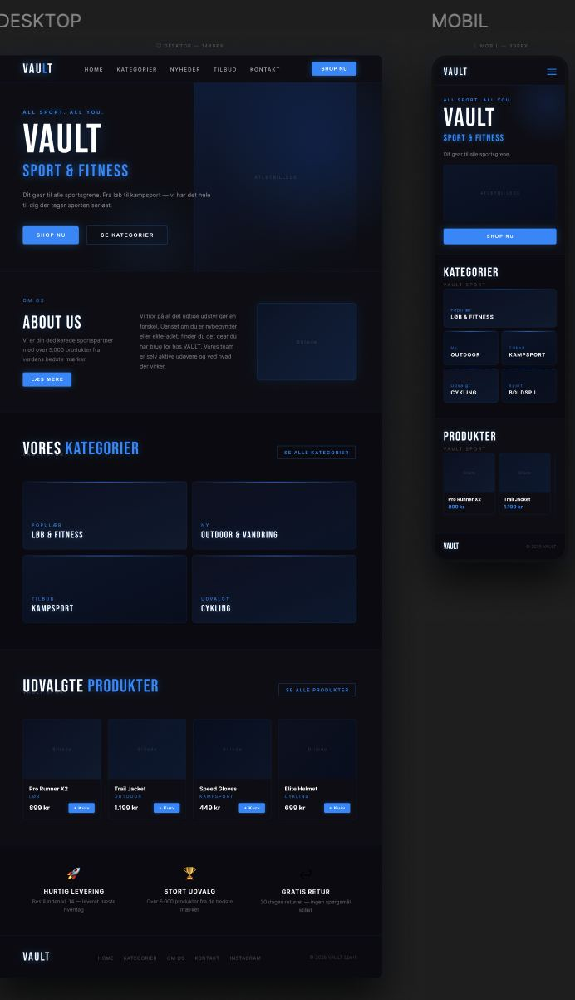

Workshop · 2. semester · 27. februar 2026
DESIGN CHALLENGE
Workshoppen handlede om at analysere UI-tendenser inden for hobby og e-handel — og derefter designe et eget website med udgangspunkt i dem. Opgaven var at finde fem kommercielle hjemmesider, tre gode og to med klare svagheder, og analysere dem ud fra farver, typografi og layout.
Jeg valgte brancherne hobby butik og e-handel og brugte Awwwards som primær kilde. Mit eget design endte som VAULT Sport & Fitness — en mørk, sporty webshop inspireret af de tendenser jeg analyserede: bold typografi, klar farvepalette og struktureret layout.

VAULT Sport & Fitness · Desktop 1440px & Mobil 390px · Figma
Del 1
6 UI-tendenser inden for hobby e-handel 2025–26
Del 2
3 gode hjemmesider fra Awwwards
Del 3
2 hjemmesider med klare svagheder
Del 4
Sammenligningstabel
| Kriterium | -ism crafts ✅ | TEAFLOW ✅ | Analogue AF-1 ✅ | BR.dk ❌ | Hobbii.dk ❌ |
|---|---|---|---|---|---|
| Farvepalette | Varm, konsistent | Sort/hvid, minimal | Mørk, teknisk | Mange ukonsistente | Lys, generisk |
| Typografi | Ren, enkel | Bold, stor | Minimal, hierarkisk | Varierende, støjende | Teksttung |
| Layout | Minimalt grid | Storytelling | Scrollytelling | Tætpakket | Standard grid |
| Micro-interaktioner | ✓ Subtile | ✓ Elegante | ✓ Avancerede | ✗ Meget få | ✗ Begrænsede |
| Brugeroplevelse | Behagelig | Premium | Immersiv | Stressende | Funktionel |
| UI-tendenser | 3 tendenser | 3 tendenser | 3 tendenser | 0 tendenser | 1 tendens |
Del 5
Konklusion — hvad kan vi lære?
De bedste hobby og e-handelssites i 2025–2026 har ét til fælles: de respekterer brugerens opmærksomhed. De råber ikke — de inviterer. De svageste sider gør det modsatte og prøver at kommunikere alt på én gang uden at give brugeren et klart fokuspunkt.